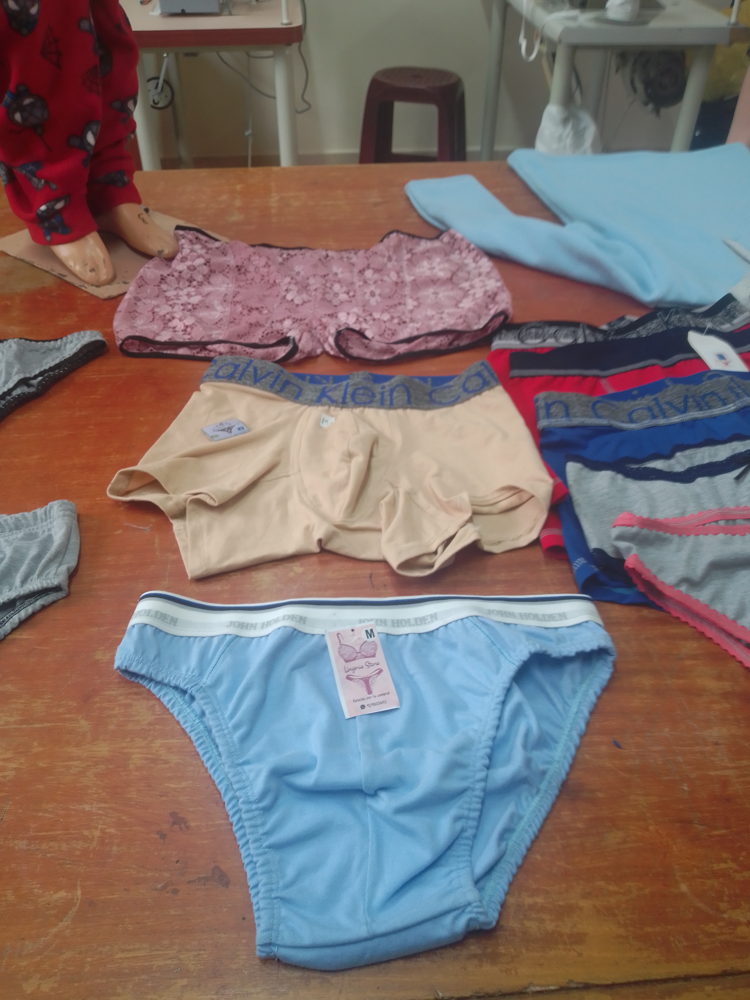
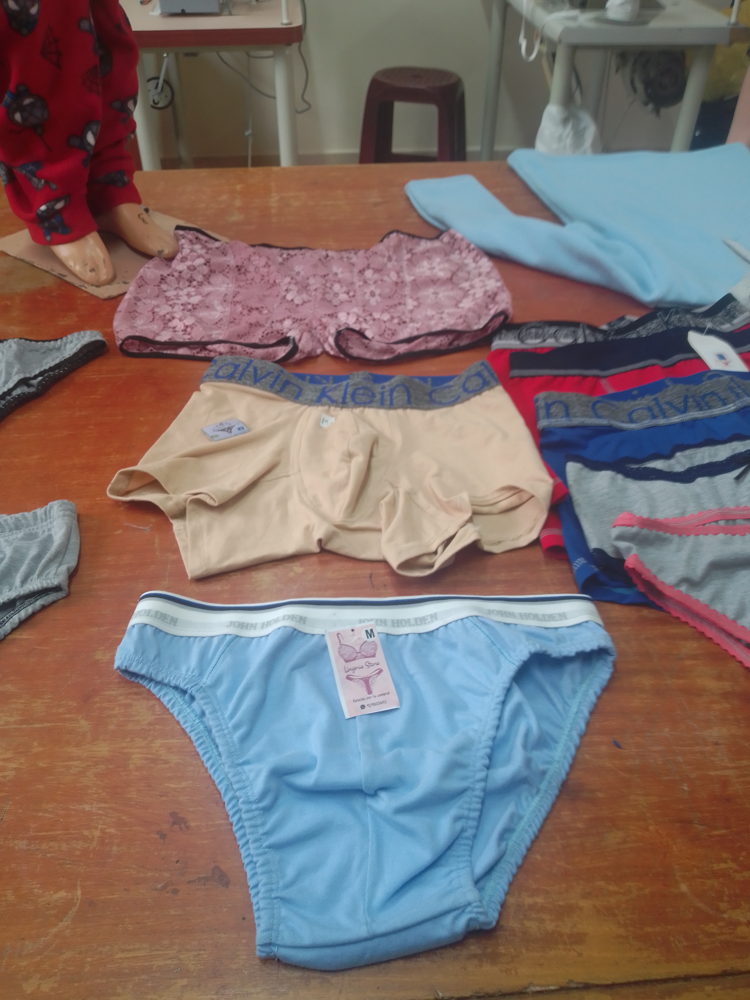

Reconocer las partes de la máquina de coser
Manejo de la máquina de coser
Diferenciar los instrumentos necesarios para la confección de prendas de vestir
Aprender puntadas básicas
Reconocer los distintos tipos de costura
Comunicación para el desarrollo personal y profesional
Experiencia formativa en situaciones reales de trabajo (EFSRT)
Técnicas de trazado y tizado de prendas de vestir en faldas, blusas y pantalones.
Técnicas de tendido en tejido plano y tejidos especiales - Máquinas Industriales.
Implementación y técnicas de corte a confeccionar - costos y presupuestos y normas de seguridad.
Procesos de corte y producción en prendas de faldas, blusas y pantalones - control de calidad.
Aplicaciones de herramientas informáticas.
Comunicación para el desarrollo personal y profesional.
Experiencia formativa en situaciones reales de trabajo. (EFSRT)
Técnicas de Habilitado de prendas de lenceria, pijamas unisex.
Operatividad de Máquinas de confección en tejido de punto y tejidos especiales.
Confección de prendas en tejido de puntos y tejidos especiales
Ensamblado y producción de las prendas de vestir de lenceria y pijamas unisex.
Educación para la cultura ambiental
Estrategias de planes de negocios
(EFSRT) Confeccion de Prendas de Lenceria, Pijamas unisex, Ropa de licra, Polos y Leggins
Técnicas de trazado y tizado de prendas de vestir en faldas, blusas y pantalones
Técnicas de tendido en tejido plano y tejidos especiales - Máquinas Industriales
Implementación y técnicas de corte a confeccionar - costos y presupuestos y normas de seguridad
Procesos de corte y producción en prendas de faldas, blusas y pantalones - control de calidad
Aplicaciones de herramientas informáticas
Comunicación para el desarrollo personal y profesional
Experiencia formativa en situaciones reales de trabajo (EFSRT)

 
